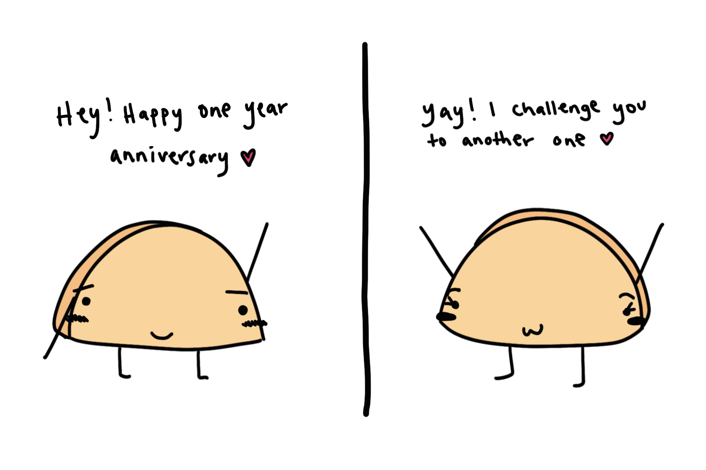

Happy One Year Anniversary 🎇
To Burton, From Cathy
Welcome to your "some effort was put in" HTML website. This was suppose to be a really badly made HTML website but as you already know, I got tons of time. So, I ended up sprucing up the HTML site with a little CSS. Nothing fancy though, because I'm still a n00b hehe.

To begin, we have our "intial topic of conversation". The two chilly playlists brought us together. As I was making this, I realized we don't really have one song that's "ours", so I'll just reference the entire playlists (for now).
Dear Burton,
As I sit here looking for different things to do every day, I wanted to write something special for our one year anniversary. Just because I'm done my undergrad doesn't mean I have to stop writing papers. This isn't going to be a structured essay because I have don't anything to prove or a thesis on our relationship but if you want me to write one, I'll consider upon request. Instead, this is going to be a one-year review on us. How it all started, how we got here, and how much I appreciate everything you've done for me in the past year+. Enjoy.
It all started when you complimented my music taste, pretended you were gonna be visiting Toronto soon (Figure 1), and told me my chill playlist on Spotify was accompanying you as you were sick in your apartment (Figure 2). I had just talked to Celina about how someone who appreciates our Spotify playlists would make us swoon more than any other gesture. One thing led to another and you bought me a textbook for my marketing class off of some sketchy Indian dude on Reddit, and randomly said I love you one night (Figure 3).
You somehow continued to intrigue me by teaching me about Aussie slang, HK party culture, basically, everything about China, your impeccable English and math skills, the list goes on. You've seriously taught and told me about so many things.. Since the first day we started chatting on December 6, 2018, I got to learn something new and interesting about you. When you video-called me from LKF that one night and I was in the hotel room with my parents in Kaohsiung, I knew you'd be trouble- but who knew it would’ve been in the best way possible.
Fast forward and I'm home from my semester abroad. We went from being in neighbouring countries to being in neighbouring continents. Somehow we still chatted day and night. You always had something interesting to tell me about. In retrospect, if you hadn't encouraged and told me that my random dumb stories are interesting, I don't think I would be who I am today. I used to think my life was so boring-- especially compared to your crazy one. When you would gossip with me about my crazy housemates, and listen to me rant about my friends and my problems, you really made me feel heard. You allowed me to turn these events (which I thought were boring) into interesting conversation topics. So thank you. This isn't the end of the letter, but thank you for real.
A lot has happened in the last year. Like when we “pretended" to date each other on Valentines 2019. When I attempted to "surprise" you with food but horribly failed as I tracked your location and watched you exit your house and watched the delivery man drive towards your house. In retrospect, it was one of the funniest moments as I panic-called you and you ran home to catch up with him. Although you lied in your DM about visiting Toronto early next year, I'm so glad you eventually made it. Even though it was more like mid-year. The fact that I was enough of a reason for you to sacrifice a full 24 hours in flight time and layovers, made me so happy.
I still remember waking up early to pick you up from the airport. I picked out a nice outfit the night before, woke up early to shower, and put on makeup. I picked up Colin so he could get Tessa and I got us to a McDonalds ASAP because I wanted to make sure you had a warm welcome. After such a long journey, you must have been hungry right?! We got delayed at McDonald's because of a creepy homeless man and you ended up meeting Tessa before me. We ran into the airport and I saw you standing next to her. First impression? Damn, he's tall. I mean, I knew this but it still got that shock factor. Especially when I was looking down from the 2nd floor. We walked over to you two and finally greeted each other. Months of talking online have led up to this point. You picked me up off the ground and spun me a little just like you said you would. I knew we would have no problems offline at that moment tbh.
Let's go into some of my favourite moments from our time together in Toronto. Can you believe our anniversary date is also the date we met each other in person for the first time. (p.s. the list is not in strict order of events).
Toronto
- - i made it late to the airport because i wanted to get you McDonalds for breakfast
- - you picked me up off the ground when we finally met, hugged real tight like you promised
- - walking up right before our 6pm PAI reservation
- - toronto simulator 🕹
- - falling asleep on you in Toronto Island (while you blazed it ahahah)
- - an "awesome" first time cabana experience for both of us (especially when Patty flipped out at the couple making out)
- - you teaching me about how games worked at the casino at Niagara
- - how much you loved jimmy the greek
- - it still intrigues me how you survived a car ride in one hour of traffic with BOTH of my parents
- - every kiss i gave you in public when no one was looking
- Me pulling a quick one on you and asking if you want to go out with me hehehohoho
I hope you had a fun time in Toronto and enjoyed it as much as I did. Hopefully the next time you come, we can do more things and create even better memories. After Toronto, we went back to long-distance but now we were OFFICIALLY doing long distance. We talked about visiting Asia together during my next break and it took me about a week after you left to book those tickets. I was so excited we would get to hang out again. And this time it would be in the places I’ve been hearing about for months - Hong Kong, LKF, Xiamen, The Hub, CHINA. It was frickin exciting news, man.
Now NOW, let's have a little run-through of China and all that happened in Asia. I have prepared another list below of my favourite moments. We’ve also been talking about these throughout April and May and every time we do, I feel all fuzzy remembering how much fun we had. I miss being with you, traveling and exploring new places with you, and simply just hanging out together. I PRESENT CHINA, HONG KONG, AND TAIPEI BELOW:
China, Hong Kong, and Taipei
- - hana to alice in changsha (wonder how they're doing)
- - everyone stealing pomelos around maos head
- - every family owning the same small child
- - duck rolls in wulingyuan 🦆🌯
- - salamander island
- - the discovery of sexy tea and how it was actually really good
- - trekking down the mountain for 2 hours as it started to get dark and having no idea when the trail would end
- - all the crazy train rides (especially the singing man)
- - all the delivery throughout china
- - the most memorable walk at night in xiamen
- - the wobbling sky walk that trailed into a mountain with no end in sight
- - all the times i would fall asleep (and snore) during a massage
- - playing don't starve together until 6am in shenzhen
- - you getting me water for my drunk/hungover ass at 7am in the morning
- - losing my passport at the club 😭
- - our first rave in the rain at creamfields
- - (me taking care of you for 2 days in HK, going out to find congee and panadol at 12am)
- - being seasick in the bedroom together during New Year Eves junk
- - you delivery 3 eczema creams for me when i was dying of rashes
- - me sneaking food from the all free breakfasts we had but never really ate at ahaha
- - the HDL noodle incident
- - all the hotpot you promised and I got to eat (thank you baby)
- - every uniqlo we walked into for you and every grocery store we walked into for me
- - chatting about future homes and plans until 5am or something in our taipei hotel
- A trip I probably won't forget for the rest of my life.
You know, I used to never cry when I heard wedding vows or cheesy love songs like Lover by Taylor Swift... but after we started dating something flipped the switch. I'm still trying to figure it out: I got emotional at my cousins wedding, I cried when I re-watched Taylor Swift's AMA performance at the part where she sang Lover, and honestly I tear up whenever I hear some couples say their vows. Whenever I hear couples who were doing long distance and are now spending their lives together I get emotional and I think about us.
I am so in love with you (cringe I know hehe). I truly believe we are going to get married one day and have a super happy life together, wherever it may be- but it’s scary when we’re in long distance… literally 16,250 kilometres apart. A full 24-hour plane trip just to get to each other’s homes. Having to learn about each other’s habits, personalities, and tendencies online. Having to communicate without seeing each other's body language or be able to physically console each other. Having to fully trust regardless of what I think that you won't fall out of love with me, all are definitely challenges. But we made it through to 1 full fucking year baby (actually more because we were basically dating in February).
Happy One Year Anniversary Burton! Cheers to a full year of banter, laughs, and love.